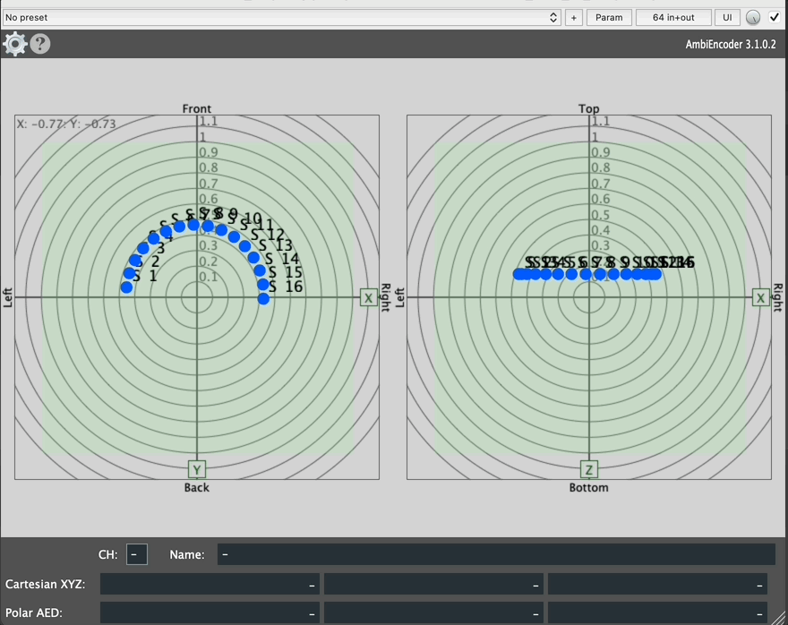
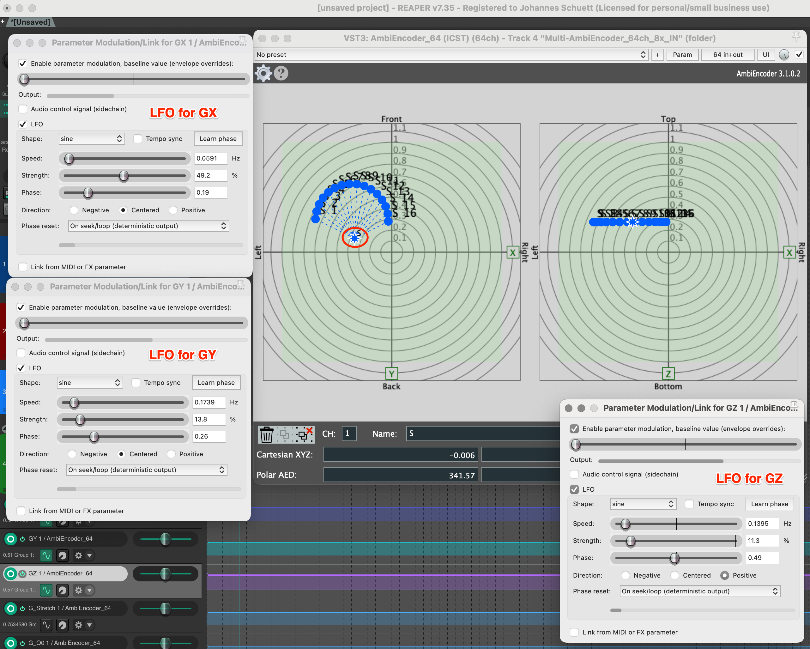
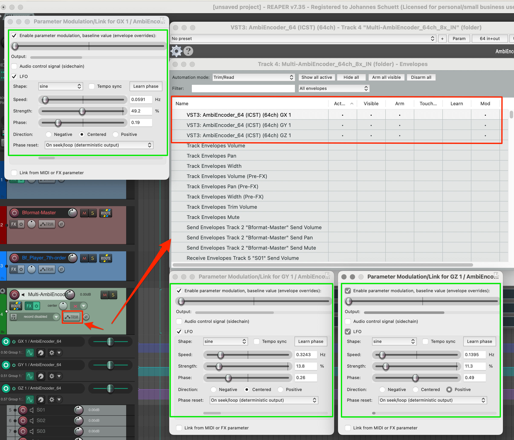
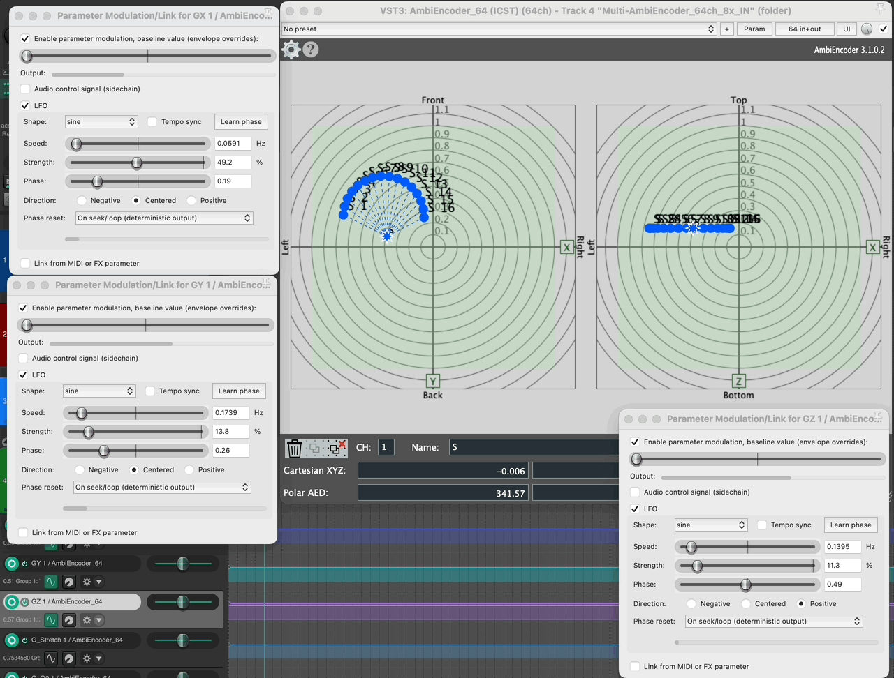
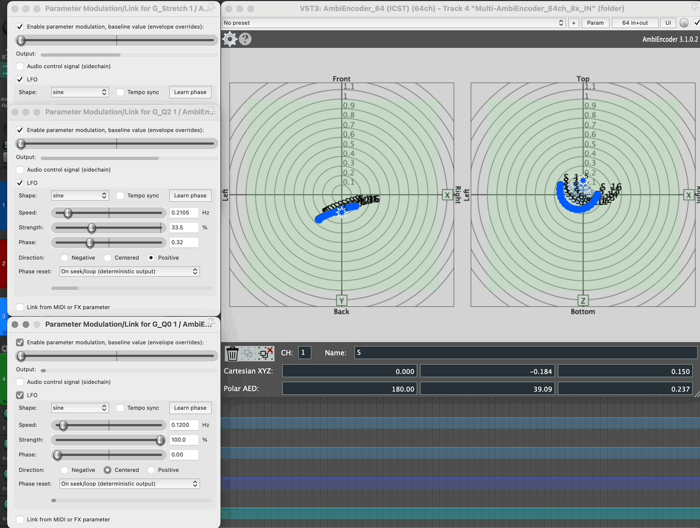
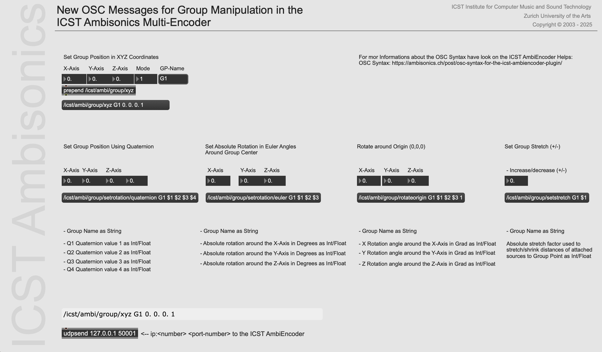
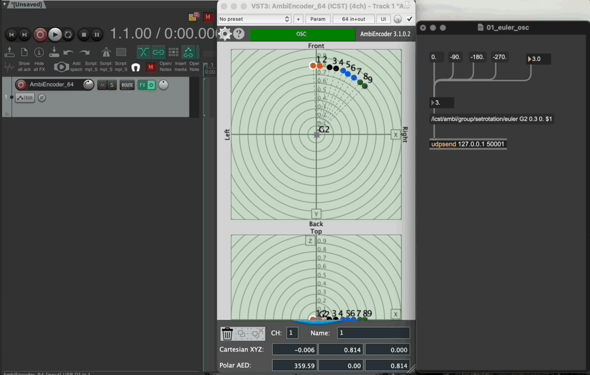

ICST MultiEncoder and GP-Manipulation
Institute for Computer Music and Sound Technology / (ICST) Zurich University of the Arts
Group Animation
The ICST Multi-Ambisonics Encoder v.2+ features a Group Animation tool for dynamically manipulating grouped audio sources in the Radar Display. By selecting a group point and holding Option (Alt) on Mac, you unlock advanced functions like group animation and group stretch, enabling synchronized movement and transformation of multiple sources for enhanced 3D spatialization.
📺 Tutorial: Points and Radar (3:15)
Simple animation of a group

- Select Points – Click to select a point; use Shift + Click for multiple points.
- Create Group – Click the Group symbol to generate a group point (e.g., ‘S’).
- Move Group – Hold Shift and drag the group point.
- Rotate Points Around Group – Hold Alt, then drag and drop the Rotate-Around-Group symbol.
- Stretch Group – Hold Alt, use the Stretch Symbol, then move the mouse up/down to adjust.
- Rotate Group Around Origin – Hold Alt, then drag and drop the Rotate-Around-Origin symbol.
💡 Tip: These functions also apply to height adjustments in the Z-Radar.
Manual recording
- Set ICST MultiEncoder (Track Automation) to ‘LATCH’ (or ‘WRITE’).
- Start playback in Reaper, hold Alt, and record your movement.
- To play back the recorded motion, set “LATCH” to “READ”.

LFO Animation of a Group

- Open the LFO Parameter Modulation in the AmbiEncoder track and activate the parameters for GX, GY, and GZ.

- Adjust the LFO parameters, such as speed, to achieve the desired movement.
Now, the group moves automatically in the radar.

💡 Tip: Connecting the LFO parameters to a MIDI/OSC interface lets you control the movement live.
LFO Group Animation with Quaternions

This is a more advanced example of animating a group using quaternion parameters.
💡 Tip: You can also drive the parameters using an audio control signal via a sidechain.
Group animation from an external source
A new ‘ICST Ambi-OSC-Patcher’ shows the direct group animation possibilities, we’ll demonstrate how to animate groups using OSC from an external source. The MultiEncoder internally converts Euler angles into quaternions. In this example, the angles from the source point (1) are crucial for the animation.

Download MaxPatch: Neuer OSC-Messenger
Group Position
- Set Group Position AED
- /icst/ambi/group/aed [GroupName] [Azimuth] [Elevation] [Distance] [Mode] Mode (1) = move the hole GP, Mode (0) = move only the GP-Point.
/icst/ambi/group/aed 'G1' 135 0 0.1 1
- Set Group Position XYZ
- /icst/ambi/group/xyz [GroupName] [X] [Y] [Z] [Mode]:
/icst/ambi/group/xyz 'G2' 0.1 0.1 0 0
OSC Animation
The ICST MultiEncoder can now be controlled directly using Euler angles via OSC.

©2025 ICST